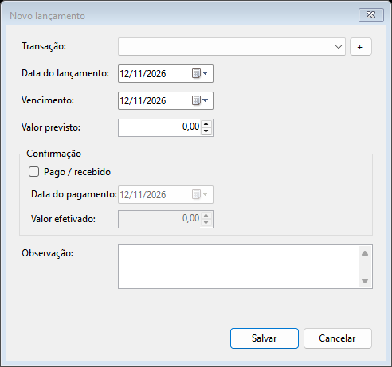
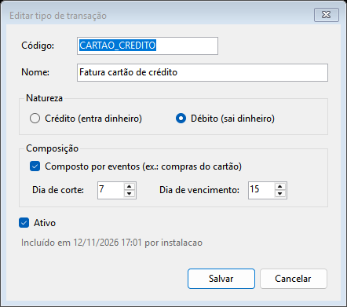
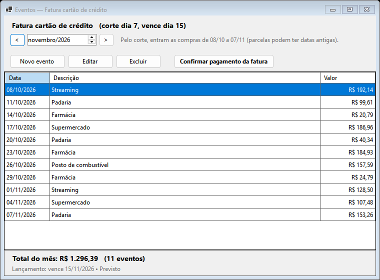
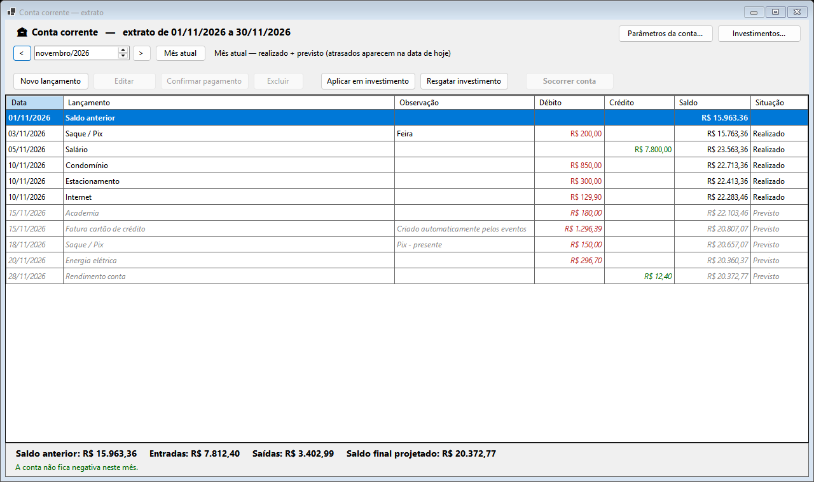
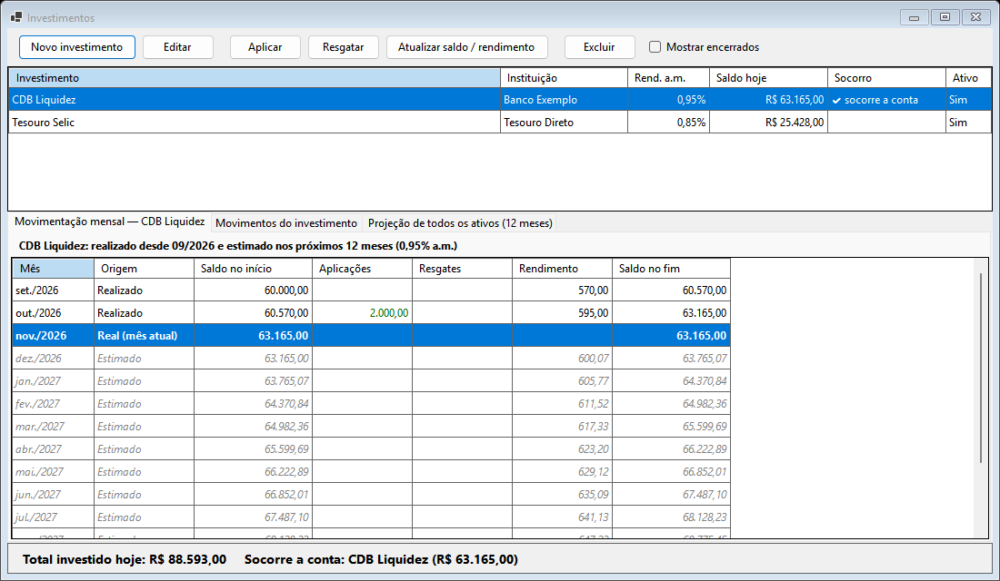
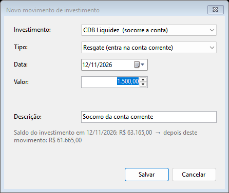
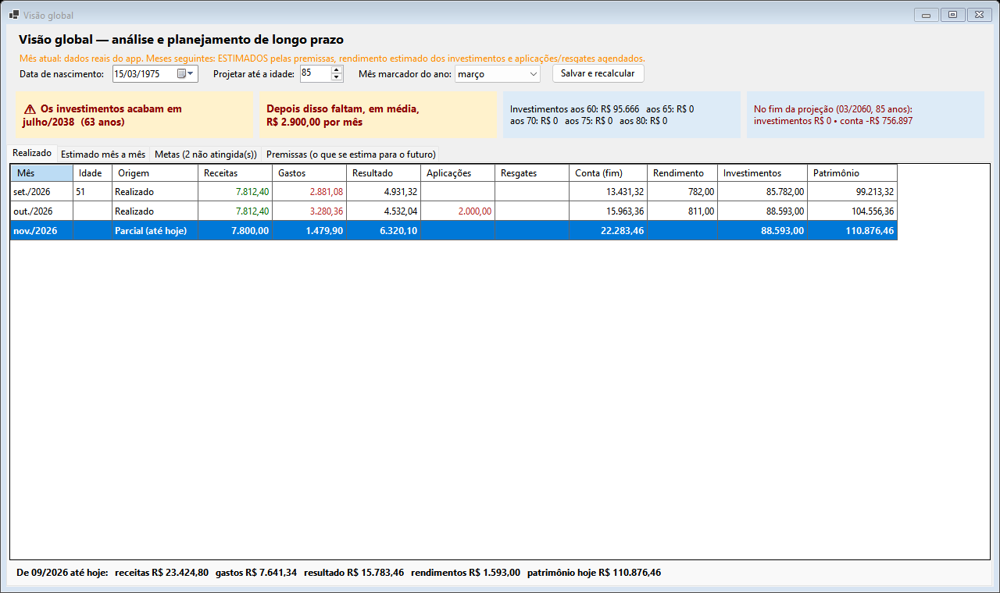
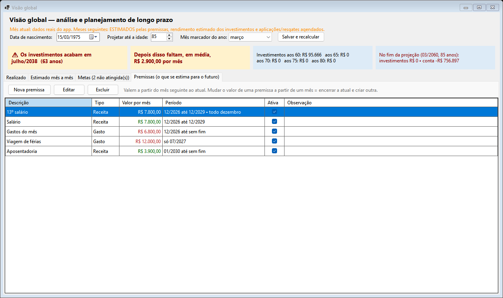
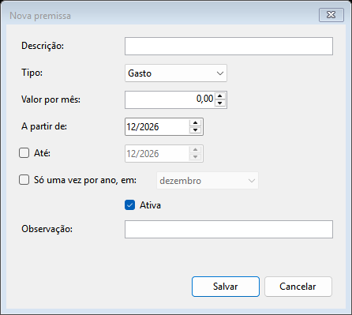
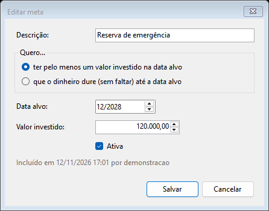

1. Primeiros passos
O AppCtrlFin guarda tudo no seu computador, num único arquivo. Não precisa de internet, de conta ou de servidor.
Na primeira vez que abre, o app cria o banco de dados zerado, já com uma lista de tipos de transação genéricos (salário, rendimentos, fatura de cartão de crédito, Pix...) que você pode editar e completar à vontade.
Em 4 passos
- Informe o saldo da conta: Conta corrente... → Parâmetros da conta... — o saldo no início de um dia (por exemplo, o dia 1º do mês atual).
- Ajuste os tipos de transação: Tipos de transação... — renomeie, crie os seus e desative os que não usa.
- Cadastre o mês: Novo lançamento para cada conta a pagar e cada recebimento previsto.
- Confirme o que aconteceu: quando pagar ou receber, use Confirmar pagamento.
2. Tela principal

Tudo gira em torno do mês de referência, escolhido no topo (< > ou Mês atual).
| Mês | O que aparece |
|---|---|
| Passado | O que está no banco. |
| Atual | O que já foi pago e o que ainda está previsto. |
| Futuro | Os previstos já cadastrados e uma simulação dos demais, copiando o último mês com dados (em cinza, itálico). |
Os quatro quadros de saldo
- Saldo da conta hoje: o dinheiro real, contando só o que já foi pago ou recebido.
- Saldo no início do mês e projeção para o fim do mês: encadeados mês a mês, como numa planilha.
- Resultado do mês: créditos menos débitos.
A grade
| Coluna | Significado |
|---|---|
| Vencimento / Pagamento | Quando vence e quando foi pago. |
| Débito / Crédito | Valor considerado: o pago, se já foi pago; senão, o previsto. |
| Previsão | Saldo acumulado contando tudo. |
| Resultado | Saldo acumulado contando só o que já foi pago. |
| Situação | Pago, Previsto, Atrasado, Parcial ou Simulado. |
- A primeira linha é a conta corrente: dois cliques abrem o extrato.
- Lançamentos do mesmo tipo ficam agrupados (▸). Dois cliques abrem ou fecham o grupo.
- Créditos aparecem em verde; aplicações e resgates de investimento, em azul.
3. Lançamentos: previsto e realizado

Todo lançamento nasce previsto: tipo, data de vencimento e valor previsto. Quando o dinheiro de fato sai ou entra, ele é confirmado com a data e o valor efetivos.
- Novo lançamento: cadastra. O botão + ao lado do tipo cria um tipo novo na hora.
- Editar: altera. Em mês futuro, numa linha simulada, vira Lançar previsto e transforma a simulação num lançamento de verdade.
- Confirmar pagamento: marca como pago. A data sugerida é hoje, se o vencimento é deste mês, ou o próprio vencimento.
- Excluir: apaga o lançamento.
4. Tipos de transação
Cada lançamento tem um tipo, que diz se é crédito (entra dinheiro) ou débito (sai dinheiro). Use Tipos de transação... para ver a lista e Novo tipo... para criar.
Um tipo pode ser composto por eventos: o valor do mês é a soma de pequenas compras. É o caso dos cartões de crédito.

5. Cartões de crédito (eventos)

Dois cliques na linha do cartão (ou o botão Eventos...) abrem as compras daquela fatura.
- Dia de corte: compras até o dia de corte entram na fatura do mês; depois dele, na fatura seguinte.
- A fatura se monta sozinha: o lançamento do cartão no mês é sempre a soma das compras. Se ainda não existe, é criado com vencimento no dia configurado.
- Estorno: informe o valor negativo.
- Parcelas: marque Lançar em outra fatura e escolha o mês de cada parcela.
- Pagar a fatura: Confirmar pagamento da fatura, nesta mesma tela.
6. Conta corrente e extrato

Abra pelo botão Conta corrente... ou com dois cliques na primeira linha da tela principal. O extrato mostra o dinheiro pela data em que entra ou sai:
- pagamentos confirmados, pela data de pagamento;
- aplicações (saem da conta) e resgates (entram na conta);
- no mês atual, também o que está previsto. O que está atrasado aparece na data de hoje.
O rodapé avisa se a conta fica negativa em algum dia do mês. Em Parâmetros da conta... ficam o nome da conta e o saldo inicial.
7. Investimentos

Abra por Investimentos..., na tela principal ou no extrato.
- Novo investimento: nome, instituição, rendimento estimado (% ao mês), saldo inicial e data.
- Socorre a conta corrente: marque em um investimento (só um pode ter essa marca). Ele é usado no socorro.
- Aplicar: o dinheiro sai da conta corrente e entra no investimento.
- Resgatar: o dinheiro sai do investimento e entra na conta.
- Atualizar saldo / rendimento: digite o saldo que o banco mostra, e o app calcula o rendimento.
Na parte de baixo ficam três abas:
- Movimentação mensal: mês a mês do investimento selecionado. Mostra o realizado e, se estiver ativo, os próximos 12 meses estimados.
- Movimentos do investimento: o histórico, onde você pode editar e excluir.
- Projeção de todos os ativos: o saldo de cada investimento nos próximos 12 meses.
Investimentos encerrados ficam escondidos. Marque Mostrar encerrados para vê-los.
8. Socorro da conta

Quando a conta corrente fica negativa no mês, o botão Socorrer conta do extrato fica disponível. Ele propõe um resgate do investimento marcado, a partir de hoje, no valor exato para a conta não ficar negativa até o fim do mês.
Nada acontece sozinho: você confere a data e o valor e salva.
9. Visão global

É a saída para análise e planejamento de longo prazo: mês a mês, até a idade que você escolher.
- O mês atual vem dos dados reais do app.
- O futuro é estimado pelas premissas, pelo rendimento estimado dos investimentos e pelas aplicações ou resgates já agendados.
- Mês sem dinheiro na conta: se a conta fecha um mês negativa, os investimentos a socorrem. Primeiro o marcado, depois os outros.
- Quando os investimentos acabam: o que falta aparece como déficit, em vermelho.
Parâmetros
- Data de nascimento: para mostrar a idade.
- Projetar até a idade: até quando vai a projeção.
- Mês marcador do ano: o mês que marca o seu ano, por exemplo o do aniversário. Ele aparece destacado, é o único que mostra a idade e é o mês usado no Resumo anual.
O resumo no topo
Mostra quando os investimentos acabam, quanto falta por mês depois disso, o saldo aos 60, 65, 70, 75 e 80 anos e a situação no fim da projeção.
Aba Realizado

Mostra, desde o início da conta, as receitas e gastos pagos, as aplicações e resgates, o saldo da conta e dos investimentos e o patrimônio no fim de cada mês.
Aba Premissas

Cada premissa é uma receita ou um gasto por mês, com período (de / até), por exemplo:
- "Gastos do mês: R$ 6.800 a partir de dezembro";
- "Salário até dezembro de 2029";
- "Aposentadoria a partir de janeiro de 2030".
Uma premissa pode valer só em um mês do ano (13º salário, IPVA). Uma entrada ou saída pontual tem início e fim no mesmo mês. Para mudar um valor a partir de um mês, encerre a premissa atual e crie outra.

10. Metas

Há dois tipos de meta, sempre contadas a partir de hoje:
- Ter investido pelo menos um valor numa data, por exemplo R$ 120.000 em dez/2028.
- O dinheiro durar até uma data, sem faltar.
Para cada meta a tela mostra se ela é atingida. Se não for, mostra quanto a mais por mês (economia ou receita), daqui até a data alvo, faria a meta ser atingida. O mês alvo também aparece marcado (🎯) na aba Estimado mês a mês.

11. Seus dados, backup e problemas
- Onde ficam os dados:
%LOCALAPPDATA%\AppCtrlFin\appctrlfin.db. Cole esse caminho na barra de endereço do Explorador de Arquivos. - Backup: feche o app e copie o arquivo
appctrlfin.dbpara outro lugar (pen drive, nuvem). Para restaurar, copie de volta. - Auditoria: todo registro guarda quem incluiu e quem alterou, e quando. Aparece no rodapé das telas de cadastro.
- Desinstalar o app não apaga os seus dados.
- Se aparecer um erro inesperado: os detalhes ficam em
%LOCALAPPDATA%\AppCtrlFin\erros.log. Envie esse arquivo junto com a descrição do que estava fazendo.